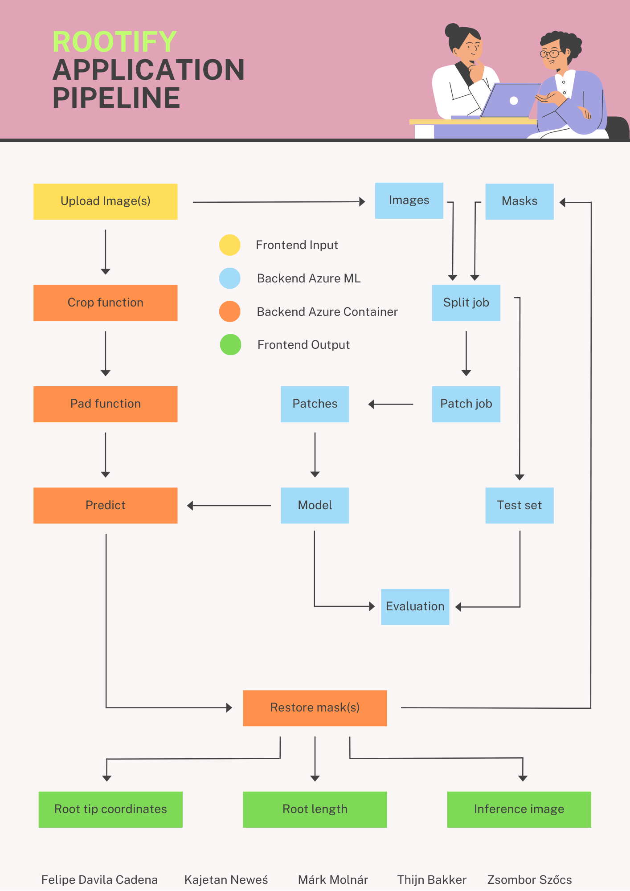
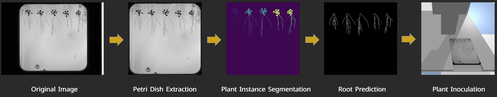
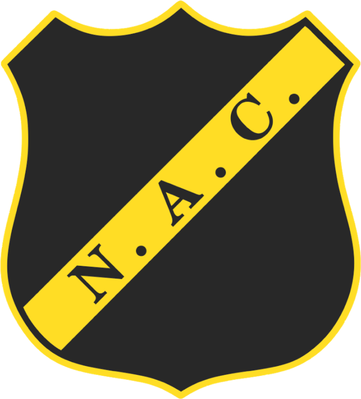

Work & Projects
I have hands on experience in Machine Learning, Deep Learning, MLOps and more through projects and coursework.
Current Role
Developing data-driven football performance analysis tools and models — including computer vision tracking, physical data enhancement, and tactical reporting systems — to support player development and national team decision-making.
Academic & Client Work
De KeukenGroep (DKG)
Designing intelligent truck loading algorithms with constraint handling, visualization, and production deployment.
🏆 Awarded Top 3 in Most Innovative Project, Best Business Value Delivered, and Best Project Overall by BUas Data Science & AI mentors and supervisors.
Kitchen cabinets present unique logistics challenges: they're bulky, fragile, and must be loaded in precise sequences to enable efficient unloading at multiple delivery stops. DKG Group, one of the largest kitchen manufacturers in the Benelux, was experiencing suboptimal truck utilization (around 60%) due to manual loading decisions, resulting in increased transportation costs and safety risks.
This project focused on designing intelligent 3D bin packing algorithms that respect real-world constraints including LIFO (Last In First Out) requirements for multi-stop deliveries, fragility rules preventing stacking on delicate items, weight distribution for vehicle safety, and label visibility after rotation. The solution processes DKG's dataset of over 1 million items across thousands of transport orders.
Working directly with DKG's warehouse staff provided invaluable operational insights—weight distribution tracking, sectional load securing, and damage prevention strategies—that significantly improved algorithm design beyond what pure academic approaches would achieve. The final deliverable includes automated PDF generation for loading checklists and cabinet stickers, enabling seamless integration into existing warehouse workflows.
Project Highlights:
Key Takeaways:
Demo video of the DKG Loading Optimizer app:
Netherlands Plant Eco-phenotyping Centre (NPEC)
Production-ready ML pipelines with CI/CD, monitoring, and cloud deployment.
Computer vision can play a pivotal role in plant science (as well as many other fields). The HADES system at The Netherlands Plant Eco-phenotyping Centre (NPEC) is a state-of-the-art phenotyping system that can generate large amounts of image data for plant science research. Computer vision models can be used to automate the analysis of this data. If computer vision models are combined with robotics, they can be used to automate the process of plant phenotyping research and accelerate the breeding of new plant varieties, through automated inoculation (and other techniques) and the analysis of plant responses.
In a previous project (see details under AI-Driven Plant Analysis), I already built proof of concept computer vision models for object detection, segmentation, localisation and measurement. This was then combined with a robotic simulation as a proof of concept for the automated inoculation process.
This project focused on designing and deploying a complete MLOps pipeline capable of supporting scalable and reliable machine learning models in production. The system was designed to minimize manual intervention through CI/CD automation, while still requiring approval for production rollouts. Models were deployed across multiple environments—including local machines, on-premise servers, and cloud platforms (Microsoft Azure)—ensuring flexibility and scalability. Automated monitoring and retraining mechanisms were implemented to detect model drift and maintain long-term accuracy.
Comprehensive documentation covering system design, deployment workflows, and monitoring strategies was delivered, ensuring reproducibility and smooth handover for future development.
Project Highlights:
Key Takeaways:
Rootify application pipeline:

Content Intelligence Agency
Analyzing spoken video dialogue with NLP and Transformers.
This project aimed to detect and classify emotions in spoken German dialogue from a popular reality show on YouTube. Commissioned by the Content Intelligence Agency, the goal was to develop a pipeline capable of analyzing spontaneous, emotionally nuanced speech and providing interpretable emotional labels at the sentence level.
The pipeline began with audio transcription and automatic translation from German to English where necessary. Using curated and cleaned datasets (GermanTrain, MELD, GoEmotions), emotional categories were standardized according to Ekman’s six core emotions (happiness, sadness, anger, fear, surprise, and disgust). Classical models such as Naive Bayes and Logistic Regression were initially tested using TF-IDF, POS tags, named entities, and sentiment scores.
For more robust performance, deep learning architectures like LSTM and RNN were implemented with regularization, class weighting, and early stopping to prevent overfitting. The highest accuracy was achieved using fine-tuned transformer models (BERT and RoBERTa), trained on multilingual corpora and augmented for data balance and generalization.
Finally, the model’s decision-making process was evaluated using explainable AI methods, such as attention visualization and post-hoc interpretability techniques, ensuring transparency and client trust. The completed prototype was demonstrated to stakeholders, highlighting its ability to identify emotional tones in real-world media content, with potential applications in audience analysis, media monitoring, and conversational AI systems.
Project Highlights:
Key Takeaways:
Final presentation slides:
Netherlands Plant Eco-phenotyping Centre (NPEC)
Identifying and segmenting root structures using Computer Vision
The Netherlands Plant Eco-phenotyping Centre (NPEC) is at the forefront of advancing plant research for sustainable agriculture. A key challenge in this field is automating root segmentation from images to enable accurate root detection and analysis. Additionally, robotics plays a critical role in ensuring precise plant inoculation. This project addresses these challenges by developing a robust plant segmentation approach, accurate root tip detection, and precise inoculation using the OT-2 robot prototype.
To tackle the complexities of plant phenotyping, we leveraged computer vision techniques to separate Petri dishes from background interference and perform semantic segmentation on plant elements such as seeds, shoots, and roots. After dataset refinement and preprocessing, I built a machine learning model capable of predicting plant structure masks with high accuracy. This allowed for instance segmentation, enabling precise measurements like root length and root tip location, both critical for assessing plant growth and characteristics.
On the robotics side, the project focused on automating the delivery of inoculants to the identified root tips. I developed a precision liquid handling robot controlled by a PID controller, ensuring accurate liquid dispensing. This robot was integrated with the computer vision pipeline, allowing it to precisely target and deliver liquid to designated areas on the Petri dish. This showcased the potential of combining vision-based analysis with robotic automation for precision-driven interventions in plant phenotyping experiments.
In addition to the PID controller, I also implemented a Reinforcement Learning (RL) model. By designing tailored reward functions and performing hyperparameter optimization, the RL-based system autonomously navigated to the correct root tips for liquid delivery. A comparative analysis between the PID controller and RL revealed that the PID system achieved superior accuracy (<1mm precision), while the RL model excelled in speed, albeit with slightly reduced accuracy.
Project Highlights:
Key Takeaways:
Workflow of the full pipeline:

Digiwerkplaats
Research on chatbot personalization, accuracy, and perceived waiting times.
As chatbots gain popularity in the business sector, they offer significant benefits such as improved operational efficiency and enhanced customer engagement. However, they also face criticism regarding their effectiveness.
This study addresses the limitations of traditional customer service models, which often fail to meet the 24/7 support expectations of today’s consumers, especially in resource-limited SMEs. By providing immediate assistance, chatbots can significantly reduce perceived wait times, thereby enhancing customer satisfaction. This research explores the impact of perceived waiting times on customer satisfaction and trust in SMEs through chatbot technology.
Employing a mixed-methods approach, the study combines quantitative surveys measuring response perceptions with qualitative interviews that delve into customer experiences with chatbots. Random sampling ensures a diverse participant profile across sectors like retail and hospitality. The analysis utilizes descriptive statistics and t-tests for quantitative data, while thematic analysis identifies key patterns in user experiences. Ethical considerations, including informed consent and data anonymization, are strictly adhered to. Ultimately, this study aims to illuminate the effectiveness of chatbots in enhancing customer satisfaction and trust, highlighting their strategic importance for SMEs in a competitive landscape.
Project Highlights:
Key Takeaways:
Final research paper:
Royal Dutch Touring Club (ANWB)
Improving road safety using advanced data analytics and machine learning.
In this project, I collaborated with a small team to build an end-to-end predictive analytics solution aimed at reducing traffic accidents in Breda. We worked with two key datasets: driving behavior data from ANWB and historical accident data from SWOV. The driving data included metrics such as harsh braking, sharp cornering, speeding, acceleration, and G-force, while the accident data provided contextual information on incident location, time, and severity.
Our first step involved extensive data preprocessing—cleaning the data, handling outliers using z-scores and quantile transformation, and applying logarithmic transformations after confirming a log-normal distribution. We engineered features and tested several machine learning models including Linear Regression, XGBoost, and Random Forest Regression, as well as deep learning approaches like Deep Neural Networks (DNNs) and Recurrent Neural Networks (RNNs) using TensorFlow. Model performance was evaluated using MAE, RMSE, and R² metrics, and we selected the most reliable model for deployment based on a combination of accuracy and interpretability.
We deployed the final model using Streamlit, integrating it with a PostgreSQL database for dynamic data access. The web app allows users to assess real-time and forecasted accident risks at a street level, with features for visualizing trends over the past 30 days and predicting risks for the next 7 days.
Project Highlights:
Key Takeaways:
Project Guidebook:
BUas Innovation Square
AI-driven fire detection in outdoor environments using Computer Vision.
This project tackles the growing threat of wildfires in outdoor environments by developing an AI-driven Outdoor Fire Alarm System. While most traditional systems are focused on indoor fire detection, this approach leverages a deep learning model trained on a custom dataset (300 images/class) to recognize fire, smoke, and safe conditions in outdoor visuals.
The model achieved a 76% accuracy, with competitive performance compared to human-level accuracy (90.48%). To ensure trust and transparency, explainable AI techniques like Grad-CAM and LIME were used to highlight how the model interprets its inputs.
Beyond model performance, the system was evaluated for usability through a think-aloud study, resulting in improved navigation, clearer instructions, and more responsive feedback mechanisms. The end product is a scalable, AI-powered safety tool designed to reduce response time and improve situational awareness in fire-prone areas.
Future developments include enhancing the model architecture, expanding the dataset, and deploying the system for real-world field testing.
Project Highlights:
Key Takeaways:
Demo video of the EmberSense Solutions mobile application:

NAC Breda
Enhancing tactical decision-making with predictive analytics.
In this project, I developed a predictive machine learning model aimed at optimizing football player positioning based on comprehensive player data. The objective was to assist football clubs in identifying the most suitable field position for each player—whether forward, midfielder, defender, or goalkeeper—using data-driven insights rather than relying on subjective decision-making or trial-and-error approaches during matches.
The dataset used combined a variety of features including numerical attributes (e.g., age, height, weight, goals, penalties, and free kicks) and categorical ones (e.g., birth country, loan status, historical positions). I performed extensive data preprocessing, handling missing values, encoding categorical variables, and applying normalization techniques to ensure the data was suitable for model training.
I implemented and evaluated a range of machine learning models including Logistic Regression, Lasso Regression, Regression Trees, Gradient Boosting, and Random Forest Classifiers. After iterative tuning and performance comparison, the Random Forest Classifier, optimized via Grid Search, achieved the highest accuracy of 88.5%. Model evaluation included confusion matrices and classification reports to assess precision, recall, and F1-score, which showed particularly high performance for goalkeepers and defenders, while some overlap remained between forwards and midfielders.
In addition to the technical development, I explored ethical implications surrounding player data use in sports organizations like NAC. I analyzed the club’s responsibilities related to data privacy, fairness, and quality under GDPR, and made practical recommendations to enhance their ethical data practices. This included ensuring transparency, minimizing algorithmic bias, and maintaining data security without compromising operational focus.
The project concluded with actionable insights for player acquisition. By identifying players who may be underutilized or mispositioned, clubs can make more strategic recruitment and development decisions. This model offers a robust and scalable solution to improve player performance, reduce misplacement risk, and bring predictive analytics into football strategy in a practical, measurable way.
Project Highlights:
Key Takeaways:
Final report:
SDG Hub at BUas
Analyzing the Impact of Mobile Network Coverage on Internet Usage in Africa
Across Africa, millions remain disconnected from the internet, limiting access to education, economic opportunities, and participation in today’s digital economy. This project aimed to uncover the link between mobile network coverage—a key component of infrastructure (SDG 9)—and internet usage, which plays a critical role in fostering global partnerships and development (SDG 17).
To address this challenge, I conducted a data-driven analysis using datasets on network coverage and internet adoption across multiple African nations. After performing correlation analysis, I built an interactive Power BI dashboard that visualizes disparities, highlights regions most affected by poor infrastructure, and simulates the impact of increased coverage on internet penetration rates.
Finally, I presented the results to peers and mentors, emphasizing the urgent need for inclusive digital policies and affordable connectivity solutions to bridge the digital divide. The insights serve as a call to action for governments and stakeholders to prioritize internet accessibility for sustainable development across the continent.
Project Highlights:
Key Takeaways:
PDF version of the Power BI dashboard: